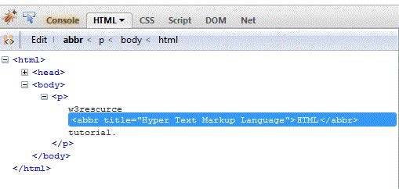

HTML NEDİR?
Web dünyasının en önemli konularından biri olan ve bir anlamda vazgeçilmezi diyebileceğimiz bir konuyla karşınızdayız. Açılımı İngilizce olarak ‘ Hyper Text Markup Language’ olan ve ‘Hiper Metin İşaretleme Dili’ şeklinde Türkçe ifade edilen bir metin işaretleme dilidir.İnternet üzerinde kullanıcıların giriş yapmalarını sağlamak amacıyla web sayfaları oluşturmak için kullanılan bir betik dili olan Html sayfası bulunduğu sunucularda ‘.html‘ veya ‘.htm‘ uzantılarıyla tutulur. Herhangi bir web sitesine giriş yapılınca sistemin bizi yönlendirdiği sayfa, siteye giriş sayfası olarak tanımlanır. Bahsedilen bu sayfanın ismi farklı farklı tanımlanabilmektedir.
HTML İLE NELER OLUŞTURULABİLİR
- Tablolar oluşturulabilir.
- Listeler yapılabilir.
- Yazılar üzerinde değişik formatlar uygulanabilir.
- Resimler sayfaya istenildiği gibi yerleştirilebilir.
HTML İLE NELER YAPILMAZ
HTML de genel olarak;
- Veriler işlenemez.
- Veri tabanı ile ilgili işlemler gerçekleştirilemez.
- Dosyadan veri okunamaz.
- Tarihe bağlı işlemler gerçekleştirilemez.
- Mail gönderilemez.
HTML ETİKETLERİİ VE ANLAMLARI
HTML'NİN TEMEL SÖZ DİZİMİ VE KURALLARI
- Etiketler içten dışa doğru kapatılır.
- Büyük küçük harf fark etmez. ama genellikle küçük harf kullanılır.
- Blok sistemi kullanılır.
- Renk, boyut, yazı tipi vs. belirtileceği zaman <> parantezleri içerisine style etiketi eklenir.
HTML DE BAĞLANTI OLUŞTURMA
HTMLDE BAĞLANTI OLUŞTURMAK İÇİN (a href="http://www.alkanmca.net") gibi url'leri <> parantezleri içerisinde vermemiz gerekir. Unutmamız gereken bir diğer konu ise http veya https etiketlerini vermemiz gerektiği.
HTMLDE SİTE İÇİ BAĞLANTI OLUŞTURMAK İÇİN (a href="index.html") gibi etiket eklememiz gerekir.
HTML'NİN DESTEKLEDİĞİ DOSYA FORMATLARI
- JPG
- PSD
- MP4
- HTML
- CSS
- JS
- AI
- ID
- PHP
- TIFF
BAŞLICA DAMGALAR
- < html > < / html > HTML kaynak dökümanı yaratır.
- < head > < / head > Kaynak dökümanın başlığıdır. Kaynağa ait veriler ve bazı genel komutlar içerir. Bu tag ’ de yer alanlar web sayfasında görünmez.
- < body > < / body > Web sayfasının gövdesini yaratır. Burada yer alanlar, sayfada görünecek olanlardır.
ADLANDIRMALAR
- < title > < / title > Kaynak dökümana ad verir. Bu ad tarayıcının en üstünde görünür.
GÖVDE NİTELENDİRMELERİ
- < body bgcolor ==??> Zemin(background) rengini belirler .
- < body text=?? > Text (metin) rengini belirler
METİN DAMGALARI
- < pre > < / pre > Önceden biçimlenmiş metinleri (preformatted text ) olduğu gibi gösterir.
- < h1 > < / h1 > En büyük başlığı yazar. < h6 > < / h6 > En küçük başlığı yazar.
- < b > < / b > (bold) Kalın Yazar
- < tt > < / tt > Teletype ya da daktilo stili metin yaratır. Harf aralıkları orantılı olmak yerine hepsi eşit olur.
- < cite > < / cite > Alıntıları belirgin kılmaya yarar. Genellikle italik biçemde yazar.
- < em > < / em > Alıntıları belirgin kılmaya yarar. Genellikle koyu biçemde yazar.
- < font size = ?? > < / font > Harf büyüklüğünü belirler. 1 den 7 ye kadar derecelendirir. Başka ölçekler de kullanılır.
- < font color == ?? > < / font > Harf rengini belirler.
METNİ BİÇİMLEME (TEXT FORMATTİNG)
- < p > < / p > Yeni paragraf yaratır.
- < p align=?(right, left) > Paragrafı sola, ortaya ya da sağa yanaşık yapar.
- < br >Yeni satıra geçer.
- < blockquote >< / blockquote > Metni iki yanda boşluk bırakarak belirgin kılar.
- < dl >< / dl > Tanımlı liste yaratır.
- < dt > Tanımlı listedeki terimleri belirler.
- < dd > Tanımlı listedeki terimlerin tanımlarını (açıklamalarını) belirler.
- < ol > < / ol > Numaralı liste yaratır.
- < ul > < / ul > Sıra numarasız liste yaratır.
- < li > < / li > Numaralı ya da numarasız listedeki maddeleri belirler. Numaralı listede maddelere sırayla numara verir. Numarasız listelere isteğe göre işaret (disk, çember vb.) koyar.
- < div align ==?? >...< / div > Div ile damgalanmış bölümün sola, ortaya ya da sağa yanaşık olmasını sağlar.
Başa Dön
3